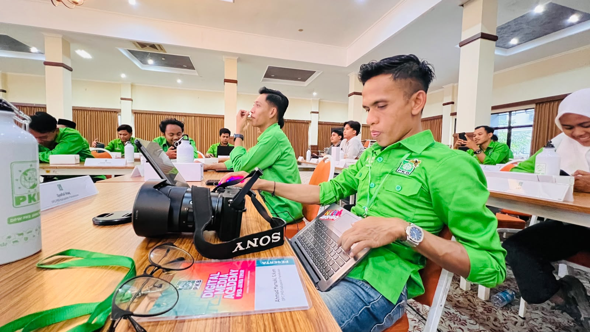

Upaya memenangkan ruang diskursus publik di era kiwari menuntut partai politik untuk keluar dari gaya kampanye konvensional dan mulai merangkul ketat ruang virtual. Menyadari perubahan lanskap demokrasi tersebut, Tim Media Dewan Pengurus Wilayah (DPW) Partai Kebangkitan Bangsa (PKB) Jawa Timur mengambil langkah taktis dengan menyelenggarakan program *Digital Media Academy*. Inisiatif terpusat ini dirancang secara khusus untuk memperkuat kapasitas diri dan keterampilan literasi digital para kader muda struktural. Para peserta yang hadir merupakan representasi langsung dari tim media Dewan Pengurus Cabang (DPC) tingkat kabupaten dan kota yang tersebar di seluruh pelosok Jawa Timur.
Pelaksanaan agenda strategis ini dilangsungkan secara intensif pada hari Sabtu, 31 Oktober 2026, bertempat di Balai Besar Penjaminan Mutu Pendidikan Jawa Timur, Kota Surabaya. Pemilihan lokasi di ibu kota provinsi ini tidak hanya bertujuan untuk memudahkan konsolidasi kader dari berbagai daerah, tetapi juga menjadi simbol keseriusan partai dalam membangun pusat komando komunikasi yang terintegrasi. Sepanjang kegiatan berlangsung, para utusan daerah ini dididik dalam iklim pembelajaran yang berfokus pada kedisiplinan pengolahan informasi serta akurasi penyampaian pesan ke ruang publik.
Langkah konsolidasi digital ini menjadi sangat krusial dan tidak bisa ditunda mengingat komposisi demografi pemilih saat ini didominasi oleh kelompok anak muda, baik dari kalangan Milenial maupun Generasi Z. Untuk dapat merespons dinamika pemilih muda yang rasional, kritis, dan cepat bosan, pelatihan ini diramu agar tidak sekadar berisi ceramah teori politik. Proses akademi diimplementasikan melalui pendekatan komprehensif yang sangat praktikal. Instruktur memfasilitasi pemaparan materi strategis yang langsung dilanjutkan dengan diskusi kelompok terpumpun, bedah studi kasus penanganan krisis, hingga praktik produksi konten visual. Lebih dari itu, peserta juga melakukan simulasi distribusi pesan ke berbagai platform media sosial dengan membaca celah algoritma secara tepat. Melalui standardisasi kemampuan ini, seluruh perangkat struktur partai di Jawa Timur diharapkan memiliki keseragaman gerak dan narasi yang kohesif dalam mengawal berbagai program kerja di wilayah mereka masing-masing.

Pendekatan edukatif dan taktis dalam akademi ini dinilai sangat relevan dengan kebutuhan kader di tingkat akar rumput yang menjadi garda terdepan saat berhadapan dengan konstituen. Hal tersebut ditegaskan oleh Mas Uuth, salah satu peserta *Digital Media Academy* PKB Jatim yang juga menjabat sebagai Ketua Dewan Pengurus Anak Cabang (DPAC) PKB Kecamatan Rungkut. Baginya, pelatihan ini memberikan bekal nyata untuk menghadapi tantangan komunikasi politik modern. "Kapasitas tim media di tingkat cabang merupakan ujung tombak komunikasi partai. Melalui *Digital Media Academy* ini, kami dilatih secara taktis untuk menguasai manajemen isu, sekaligus meramu pesan kampanye yang faktual dan dapat diterima oleh nalar pemilih muda di wilayah kami masing-masing," ungkapnya. Pernyataan tersebut mencerminkan kesiapan kader muda struktural yang tidak lagi sekadar menjadi penerima instruksi, melainkan telah berevolusi menjadi kreator pesan yang mandiri.
Secara historis, PKB memang dikenal memiliki akar basis massa yang sangat kokoh di kalangan pesantren dan masyarakat pedesaan. Namun, melalui terobosan akademi digital semacam ini, partai tersebut menunjukkan kelenturan adaptasi yang tinggi dalam menjangkau masyarakat urban perkotaan dan pengguna internet aktif. Pelatihan ini juga dikonsep sebagai benteng pertahanan informasi untuk memerangi peredaran hoaks politik yang kerap menciderai proses demokrasi. Pada akhirnya, program *Digital Media Academy* ini ditargetkan mampu mencetak tenaga strategis media yang mandiri, objektif, dan berdaya saing di setiap kabupaten atau kota. Dengan infrastruktur komunikasi yang telah diperbarui, para kader muda ini diproyeksikan siap menghadapi berbagai momentum elektoral di masa mendatang dengan cara-cara yang lebih bermartabat, inovatif, dan mencerdaskan kehidupan masyarakat luas.